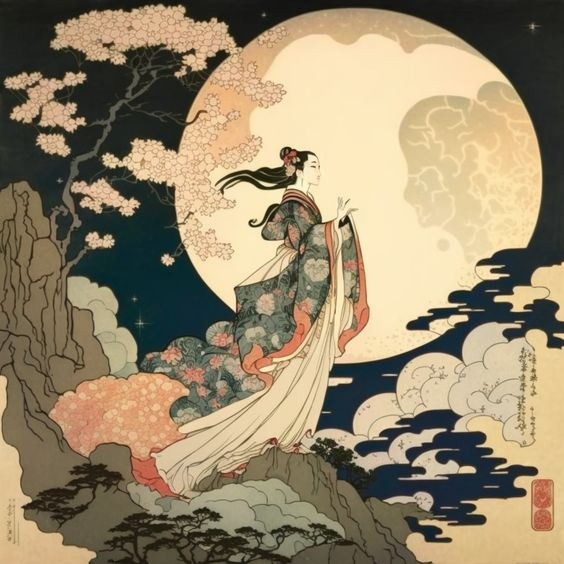
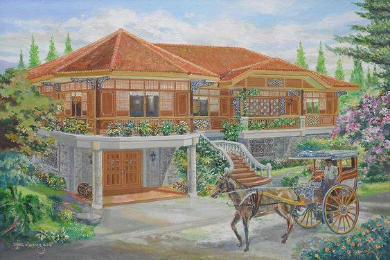
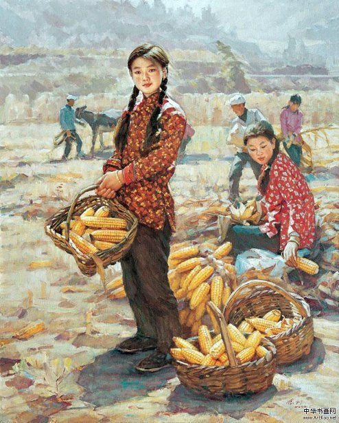

Traditional art refers to artistic practices, techniques, and styles that have been developed and passed down through generations within various cultures. Unlike digital art or modern forms of art, traditional art typically involves physical materials and tools, such as pencils, paints, brushes, canvas, clay, and carving tools.
Characteristics of Traditional Art:
1. Handcrafted: Traditional art is typically created by hand, using physical materials and tools rather than digital technology.
2. Cultural Heritage: Traditional art often reflects the cultural values, beliefs, and traditions of a particular society or community. It may encompass various art forms such as painting, sculpture, pottery, textile art, and folk art.
3. Historical Significance: Many traditional art forms have a long history and are deeply rooted in the cultural heritage of a region. They may have evolved over centuries, with each generation adding its own innovations and interpretations.
4. Technique-Driven: Traditional art often emphasizes mastery of specific techniques and skills, which are passed down through training, apprenticeship, or mentorship. Artists may spend years honing their craft and perfecting their skills.
5. Materials and Mediums: Traditional artists use a wide range of materials and mediums, including oil paints, watercolors, charcoal, ink, clay, wood, stone, and metal. Each medium has its own unique properties and requires different techniques for manipulation.
6. Physical Presence: Traditional artworks typically have a physical presence, whether as paintings hanging on walls, sculptures displayed in galleries, or ceramics exhibited in museums. Viewers can interact with these artworks in tangible ways, appreciating their texture, form, and materiality.
7. Cultural Preservation: Traditional art plays a significant role in preserving cultural heritage and identity. Many traditional art forms are considered sacred or symbolic within their respective cultures and are passed down from generation to generation as a way of preserving cultural memory and traditions.
Examples of traditional art include:
- Oil Painting: A classic medium where pigments are mixed with oil to create rich, vibrant colors.
- Sculpture: Three-dimensional artworks created by shaping or carving materials such as clay, stone, wood, or metal.
- Textile Art: Handcrafted textiles, such as weaving, embroidery, and quilting, often reflecting regional styles and motifs.
- Ceramics: Pottery and porcelain objects created by shaping and firing clay, with techniques ranging from hand-building to wheel-throwing.
- Folk Art: Artworks created by individuals within a community, often using traditional techniques and motifs to depict local customs, stories, and beliefs.
Overall, traditional art forms continue to hold cultural significance and contribute to the diversity and richness of global artistic expression.